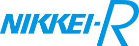
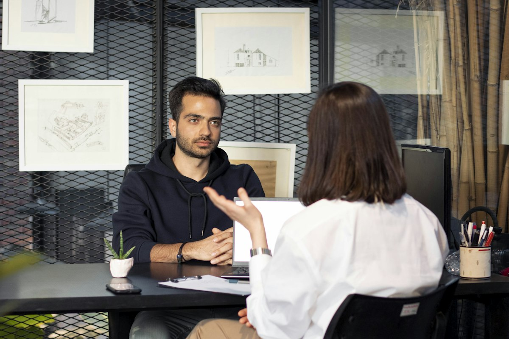
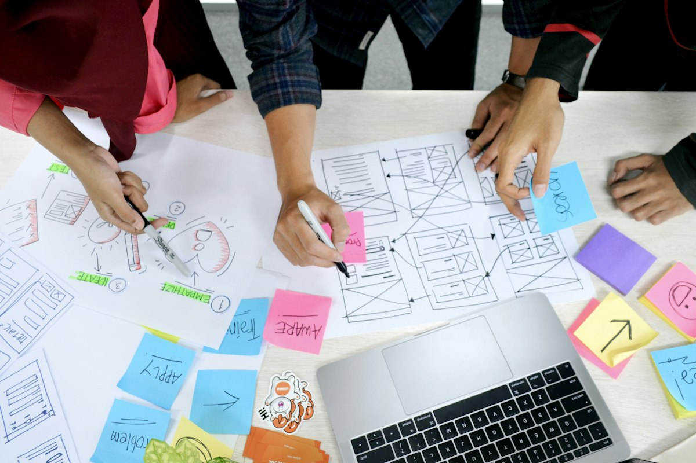

ご支援企業（一部）




JILのやり方
戦略を描くだけのコンサルでも、作るだけの開発会社でもなく。構想から、売る人・回す人まで。必要な職種のメンバーが、貴社のチームの一員として入ります。
JILの事業開発の特徴
事業開発の経験を持つメンバーが、考える・つくる・売る・回すを、ひとつのチームで引き受けます。
Judgement01
審査する側の目線で、筋の良い事業と、やめるべき事業を見極めます。社内の審査を通す計画づくりまで伴走します。
役員が携わってきた事業審査の数
Execution02
設計して終わりにせず、マーケティング・営業・CS・業務まで、常駐や業務委託で人が入り、事業を実際に動かします。
売る人・回す人まで、チームの一員として
Organization03
起案制度・カルチャー・研修まで設計し、一度きりで終わらず、事業が生まれ続ける組織を社内に残します。
役員による人事・組織コンサルティングの実績
事業づくりの流れ
どのステップからでもご依頼いただけます。必要な職種のメンバーが、ステップごとに入れ替わりながら伴走します。

Step 010→1
戦略・ビジネスモデル設計／伴走

Step 020→1
事業化検証の伴走／インキュベート

Step 031→10
プロダクト・ソリューションスキームの開発
Step 041→10
リリース後の設計と人材のアサイン
Foundation ／ 10→100
4つのステップ全体を支え、事業が生まれ続ける組織へ広げます。
事業開発 × AI
新規事業は、どれだけ早く、多く試せるかで成否が分かれます。JILでは、判断は事業開発のプロが担い、調べる・つくる・試す作業をAIで加速。検証のサイクルを速く、回数を多くします。
Speed
高速
打ち合わせで出たアイデアを、翌日には触れる試作画面にして、すぐ顧客に当てます。
Volume
量産
訴求や見せ方を大量に用意し、反応の良いものを数字で選びます。
Coverage
網羅
人手では追い切れない範囲まで調べ、見落としを減らして構想の精度を上げます。
Reach
接点
ビジネスSNSなどの公開情報から対象者を抽出し、すぐにインタビューへつなげます。
※ 事例は支援内容の一例です。期間や数量は案件によって異なります。
ご相談